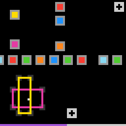

re86
Push coloured objects around; the level is cleared when each ring centre is covered by a same-colour object.
8 levels · 12 rules · all levels replayed in Lean
How it plays
There are several coloured objects on the board (cross, diagonal cross, diamond, hollow square frame, horizontal line), and the white cursor sits at the centre of the one currently being controlled. The up, down, left and right keys push this whole object by 3 cells, and the switch key moves the cursor to another object. The dark small square frames are rings, and the colour at a ring's centre says which colour of object it is to be covered by. The solid-colour blocks in the grey frame are colour blocks, and an object that touches one turns entirely into this colour. The light-grey solid blocks are blockers and do not move: when a cross hits one, its two bars each go their own way; a hollow square frame that hits one changes shape, with the perimeter unchanged. The level is cleared when every ring centre is covered by an object of the same colour. The bottom row is the counter bar.


Replay
The certified run that cleared every level, one action at a time.
Keys: ← → step, Space play / pause. A click is circled; cells that changed are outlined.
Model
The final model: 7 object types and 12 rules. Each rule is a Python check against every recorded step; most are also Lean definitions.
Object types
- Objects
piecesPushable coloured shapes: cross, diagonal cross, diamond, hollow square frame, horizontal line. - Cursor
cursorA white dot at the centre of the object being controlled. - Rings
ringsDark small square frames; the centre colour says which object colour must cover it. - Colour blocks
swatchesA solid colour in a grey frame; an object touching it turns this colour. - Blockers
blockersLight-grey solid blocks; never move or get covered; objects hitting them deform. - Counter bar
spentThe bottom row, recording how many cells this level has spent. - Stacking order
overWhich of two overlapping objects is drawn on top.
Rules
translateWithout hitting a blocker, the controlled object shifts 3 cells, keeping its shape and size.Python
from __future__ import annotations from derive.contact import blocked, maybe_blocked from derive.fiber import agree from .._common import DELTA, first, not_in_level, not_push … … … BOOK = ["a1_up", "a2_down", "a3_left", "a4_right", "edge_clips_arm", "arm_len_fixed", "bar_len_conserved"] def predict(p, a): dr, dc = DELTA[a] return p.moved(dr, dc) def scope_(w, a, nw, ctx): r = first(not_push(a), not_in_level(ctx)) if r: return r p = w.active_piece() if p is None: return None dr, dc = DELTA[a] if blocked(p, dr, dc, w.blockers): … return None def assert_(w, a, nw, ctx): p = w.active_piece() if p is None: … dr, dc = DELTA[a] if maybe_blocked(p, dr, dc, w.blockers): … q = predict(p, a) for o in nw.pieces: q2 = type(q)(q.kind, o.color, q.top, q.left, q.bottom, q.right, q.hub, q.hollow, q.known) if agree(q2, o) is None: return True return FalseLean
import Obj.World namespace Game def hitsBlock (b : Board) (p : Piece) (dr dc : Int) : Bool := b.blockers.any (fun rc => p.mem (rc.1 - dr) (rc.2 - dc)) def translate (p : Piece) (a : Act) : Piece := p.shift a.delta.1 a.delta.2 end Gameblocked_crossA cross's bar that would hit a blocker stays; the other bar moves 3 cells.Python
from __future__ import annotations from derive.contact import bars, blocked, reach from derive.fiber import agree from .._common import DELTA, first, not_in_level, not_push … … BOOK = ["blocked_deforms"] def predict(p, a, blockers): dr, dc = DELTA[a] R, C = p.hub h, v = bars(p) hb = any((r + dr, c + dc) in blockers for r, c in h) vb = any((r + dr, c + dc) in blockers for r, c in v) Rh, l, r_ = (R, p.left, p.right) if hb else (R + dr, p.left + dc, p.right + dc) Cv, t, b = (C, p.top, p.bottom) if vb else (C + dc, p.top + dr, p.bottom + dr) if not h: Rh, l, r_ = R + (0 if vb else dr), C + (0 if vb else dc), C + (0 if vb else dc) if not v: Cv, t, b = C + (0 if hb else dc), R + (0 if hb else dr), R + (0 if hb else dr) return type(p)("cross", p.color, min(t, Rh), min(l, Cv), max(b, Rh), max(r_, Cv), (Rh, Cv), False, p.known) def scope_(w, a, nw, ctx): r = first(not_push(a), not_in_level(ctx)) if r: return r p = w.active_piece() if p is None: return None dr, dc = DELTA[a] if not blocked(p, dr, dc, w.blockers): … if p.kind != "cross": … return None def assert_(w, a, nw, ctx): p = w.active_piece() if p is None: … dr, dc = DELTA[a] if any((r + dr, c + dc) in w.blockers for r, c in reach(p)): … q = predict(p, a, w.blockers) for o in nw.pieces: q2 = type(q)(q.kind, o.color, q.top, q.left, q.bottom, q.right, q.hub, q.hollow, q.known) if agree(q2, o) is None: return True return FalseLean
import Obj.World import Rule.Move.Translate namespace Game def blockedCross (b : Board) (p : Piece) (a : Act) : Piece := let dr := a.delta.1 let dc := a.delta.2 let hasH := decide (p.left < p.right) let hasV := decide (p.top < p.bottom) let hb := hasH && b.blockers.any (fun rc => rc.1 - dr == p.hr && decide (p.left ≤ rc.2 - dc) && decide (rc.2 - dc ≤ p.right)) let vb := hasV && b.blockers.any (fun rc => rc.2 - dc == p.hc && decide (p.top ≤ rc.1 - dr) && decide (rc.1 - dr ≤ p.bottom)) let rh := if hasH then (if hb then p.hr else p.hr + dr) else (if vb then p.hr else p.hr + dr) let l := if hasH then (if hb then p.left else p.left + dc) else (if vb then p.hc else p.hc + dc) let rr := if hasH then (if hb then p.right else p.right + dc) else (if vb then p.hc else p.hc + dc) let cv := if hasV then (if vb then p.hc else p.hc + dc) else (if hb then p.hc else p.hc + dc) let t := if hasV then (if vb then p.top else p.top + dr) else (if hb then p.hr else p.hr + dr) let bt := if hasV then (if vb then p.bottom else p.bottom + dr) else (if hb then p.hr else p.hr + dr) { p with top := min t rh, left := min l cv, bottom := max bt rh, right := max rr cv, hr := rh, hc := cv } end Gameblocked_boxA blocked hollow square frame reshapes with equal perimeter; a side under 4 stops it.Python
from __future__ import annotations from derive.contact import blocked from derive.fiber import agree from .._common import DELTA, first, not_in_level, not_push … BOOK = ["blocked_rect_trades", "rect_trade_needs_room"] def predict(p, a): dr, dc = DELTA[a] t, l, b, r = p.top, p.left, p.bottom, p.right h, wd = b - t + 1, r - l + 1 R0, C0 = p.center if dc != 0: nh, nw_ = h + 3, wd - 3 l2, r2 = (l + 3, r) if dc > 0 else (l, r - 3) opts = [(t, b + 3), (t - 3, b)] t2, b2 = min(opts, key=lambda x: abs((x[0] + x[1] + 1) // 2 - R0)) else: nh, nw_ = h - 3, wd + 3 t2, b2 = (t + 3, b) if dr > 0 else (t, b - 3) opts = [(l, r + 3), (l - 3, r)] l2, r2 = min(opts, key=lambda x: abs((x[0] + x[1] + 1) // 2 - C0)) if min(nh, nw_) < 4: return p return type(p)("box", p.color, t2, l2, b2, r2, ((t2 + b2 + 1) // 2, (l2 + r2 + 1) // 2), p.hollow, p.known) def scope_(w, a, nw, ctx): r = first(not_push(a), not_in_level(ctx)) if r: return r p = w.active_piece() if p is None: return None dr, dc = DELTA[a] if not blocked(p, dr, dc, w.blockers): … if p.kind != "box": … return None def assert_(w, a, nw, ctx): p = w.active_piece() if p is None: … if not all(p.known): … q = predict(p, a) for o in nw.pieces: q2 = type(q)(q.kind, o.color, q.top, q.left, q.bottom, q.right, q.hub, q.hollow, q.known) if agree(q2, o) is None: return True return FalseLean
import Obj.World import Rule.Move.Translate namespace Game def blockedBox (p : Piece) (a : Act) : Piece := let dr := a.delta.1 let dc := a.delta.2 let h := p.bottom - p.top + 1 let w := p.right - p.left + 1 if dc ≠ 0 then let l2 := if dc > 0 then p.left + 3 else p.left let r2 := if dc > 0 then p.right else p.right - 3 let d1 := iabs ((p.top + (p.bottom + 3) + 1) / 2 - p.cr) let d2 := iabs (((p.top - 3) + p.bottom + 1) / 2 - p.cr) let t2 := if d2 < d1 then p.top - 3 else p.top let b2 := if d2 < d1 then p.bottom else p.bottom + 3 if min (h + 3) (w - 3) < 4 then p else { p with top := t2, left := l2, bottom := b2, right := r2, hr := (t2 + b2 + 1) / 2, hc := (l2 + r2 + 1) / 2 } else let t2 := if dr > 0 then p.top + 3 else p.top let b2 := if dr > 0 then p.bottom else p.bottom - 3 let d1 := iabs ((p.left + (p.right + 3) + 1) / 2 - p.cc) let d2 := iabs (((p.left - 3) + p.right + 1) / 2 - p.cc) let l2 := if d2 < d1 then p.left - 3 else p.left let r2 := if d2 < d1 then p.right else p.right + 3 if min (h - 3) (w + 3) < 4 then p else { p with top := t2, left := l2, bottom := b2, right := r2, hr := (t2 + b2 + 1) / 2, hc := (l2 + r2 + 1) / 2 } end GamerecolorTouching a colour block or its grey frame turns the whole object that colour.Python
from __future__ import annotations from derive.contact import maybe_touched, touched from .._common import first, not_in_level, not_push … BOOK = ["swatch_recolors_object"] def scope_(w, a, nw, ctx): return first(not_push(a), not_in_level(ctx)) def assert_(w, a, nw, ctx): p = w.active_piece() if p is None: … q = nw.active_piece() if q is None: … if maybe_touched(q, nw.swatches): … hit = touched(q, nw.swatches) want = hit[0].color if hit else p.color return q.color == wantLean
import Obj.World namespace Game def Piece.touches (p : Piece) (s : Swatch) : Bool := (List.range s.size.toNat).any (fun i => (List.range s.size.toNat).any (fun j => p.mem (s.top + i) (s.left + j))) def firstTouched (ss : List Swatch) (p : Piece) : Option Swatch := (ss.filter (fun s => p.touches s)).foldl (fun acc s => match acc with | none => some s | some t => if s.top < t.top || (s.top == t.top && s.left < t.left) then some s else acc) none def recolor (b : Board) (p : Piece) : Piece := match firstTouched b.swatches p with | some s => { p with color := s.color } | none => p end GamecycleSwitching moves the cursor one object up the stacking order, wrapping from top to bottom.Python
from __future__ import annotations from derive.fiber import agree from .._common import first, not_in_level … BOOK = ["a5_switch", "a5_cycle_order", "a5_skips_offboard", "active_center_when_hidden", "diamond_center_hollow", "rect_center_hollow", "center_cell_persists", "cursor_layer", "cursor_hidden_by_object"] def _on(c): return 0 <= c[0] < 63 and 0 <= c[1] < 64 def successor(pieces, layers, cur): ring = [i for i in layers if _on(pieces[i].center) or i == cur] k = ring.index(cur) for step in range(1, len(ring) + 1): j = ring[(k + step) % len(ring)] if j != cur and _on(pieces[j].center): return j return cur def scope_(w, a, nw, ctx): … def assert_(w, a, nw, ctx): if w.active is None: … if nw.active is None: … for p in w.pieces: if not any(agree(p, o) is None for o in nw.pieces): return False n = len(w.pieces) layers = ctx.get("layers") if n > 2 and layers is None: … if layers is None: layers = list(range(n)) want = w.pieces[successor(w.pieces, layers, w.active)] got = nw.active_piece() want2 = type(want)(want.kind, want.color, want.top, want.left, want.bottom, want.right, want.hub, None, want.known) return agree(want2, type(got)(got.kind, got.color, got.top, got.left, got.bottom, got.right, got.hub, None, got.known)) is NoneLean
import Obj.World namespace Game def Piece.onBoard (p : Piece) : Bool := decide (0 ≤ p.cr) && decide (p.cr < 63) && decide (0 ≤ p.cc) && decide (p.cc < 64) def cycle (s : World) : Nat := let n := s.pieces.length let cand := (List.range n).map (fun k => (s.active + k + 1) % n) (cand.find? (fun j => j != s.active && ((s.pieces[j]?).map Piece.onBoard).getD false)).getD s.active end Gamelevel_upThe level is cleared exactly when every ring centre is covered by a same-colour object.Python
from __future__ import annotations from derive.contact import blocked, reach, touched from .._common import DELTA from ..move import blocked_box, blocked_cross, translate … BOOK = ["all_on_target_levels_up", "no_levelup_unless_aligned", "wrong_color_cover_no_levelup", "no_visible_satisfaction_mark"] def push_piece(p, a, blockers, swatches): dr, dc = DELTA[a] if not blocked(p, dr, dc, blockers): q = translate.predict(p, a) elif p.kind == "cross": q = blocked_cross.predict(p, a, blockers) elif p.kind == "box": if not all(p.known): … q = blocked_box.predict(p, a) else: … hit = touched(q, swatches) if hit: q = type(q)(q.kind, hit[0].color, q.top, q.left, q.bottom, q.right, q.hub, q.hollow, q.known) return q def after(w, a): pcs = list(w.pieces) if a == "ACTION5": return pcs if w.active is None: … q = push_piece(w.active_piece(), a, w.blockers, w.swatches) if isinstance(q, str): return q pcs[w.active] = q return pcs def scope_(w, a, nw, ctx): return "RESET → notmodel/reset_restarts" if a == "RESET" else None def assert_(w, a, nw, ctx): owners = ctx.get("owners") or {} if any(o is None for o in owners.values()) or not owners: … pcs = after(w, a) if isinstance(pcs, str): return pcs won = ctx.get("level_next") != ctx.get("level_prev") or ctx.get("state_next") == "WIN" goal, maybe = True, False for c, o in owners.items(): if any(c in p.cells() and p.color == o for p in pcs): continue goal = False if any(c in reach(p) for p in pcs): maybe = True if not goal and maybe: … return goal == wonLean
import Obj.World namespace Game def isGoal (b : Board) (s : World) : Bool := b.rings.all (fun g => s.pieces.any (fun p => p.mem g.r g.c && p.color == g.owner)) end Gameothers_stayWhen pushing, objects not controlled keep their position and colour.Python
from __future__ import annotations from derive.fiber import agree from .._common import first, not_in_level, not_push … BOOK = ["other_cross_static"] def scope_(w, a, nw, ctx): return first(not_push(a), not_in_level(ctx)) def assert_(w, a, nw, ctx): if w.active is None: … for i, p in enumerate(w.pieces): if i == w.active: continue if not any(agree(p, o) is None for o in nw.pieces): return False return TrueLean
import Obj.World import Step open Game theorem others_stay (b : Board) (s s' : World) (a : Act) (ha : a ≠ .switch) (h : next b s a = some s') : s'.pieces.length = s.pieces.length ∧ ∀ i, i ≠ s.active → s'.pieces[i]? = s.pieces[i]? := by cases a with | switch => exact absurd rfl ha | up | down | left | right => simp only [next] at h split at h · simp at h · obtain ⟨q, _, hq⟩ := Option.map_eq_some_iff.mp h subst hq refine ⟨List.length_set, ?_⟩ intro i hi exact List.getElem?_set_ne (Ne.symm hi) theorem layers_kept (b : Board) (s s' : World) (a : Act) (h : next b s a = some s') : s'.pieces.length = s.pieces.length ∧ ∀ i, i ≠ s.active → s'.pieces[i]? = s.pieces[i]? := by by_cases ha : a = .switch · subst ha simp only [next, Option.some.injEq] at h subst h exact ⟨rfl, fun _ _ => rfl⟩ · exact others_stay b s s' a ha h theorem switch_keeps_pieces (b : Board) (s s' : World) (h : next b s .switch = some s') : s'.pieces = s.pieces := by simp only [next, Option.some.injEq] at h subst h rfllayersThe stacking order of overlapping objects never flips within a step.Python
from __future__ import annotations from derive.fiber import agree from .._common import not_in_level … BOOK = ["zorder_fixed_order", "zorder_stable_one_step", "recolor_keeps_zorder"] def _ids(w, nw): out = {} used = set() for i, p in enumerate(w.pieces): if i == w.active: continue for j, o in enumerate(nw.pieces): if j not in used and agree(p, o) is None: out[i] = j used.add(j) break if w.active is not None and nw.active is not None and nw.active not in used: out[w.active] = nw.active return out def scope_(w, a, nw, ctx): return not_in_level(ctx) def assert_(w, a, nw, ctx): if not w.over or not nw.over: … m = _ids(w, nw) both = 0 for (i, j) in w.over: if i in m and j in m: if (m[j], m[i]) in nw.over: return False if (m[i], m[j]) in nw.over: both += 1 …Lean
import Obj.World import Step open Game theorem others_stay (b : Board) (s s' : World) (a : Act) (ha : a ≠ .switch) (h : next b s a = some s') : s'.pieces.length = s.pieces.length ∧ ∀ i, i ≠ s.active → s'.pieces[i]? = s.pieces[i]? := by cases a with | switch => exact absurd rfl ha | up | down | left | right => simp only [next] at h split at h · simp at h · obtain ⟨q, _, hq⟩ := Option.map_eq_some_iff.mp h subst hq refine ⟨List.length_set, ?_⟩ intro i hi exact List.getElem?_set_ne (Ne.symm hi) theorem layers_kept (b : Board) (s s' : World) (a : Act) (h : next b s a = some s') : s'.pieces.length = s.pieces.length ∧ ∀ i, i ≠ s.active → s'.pieces[i]? = s.pieces[i]? := by by_cases ha : a = .switch · subst ha simp only [next, Option.some.injEq] at h subst h exact ⟨rfl, fun _ _ => rfl⟩ · exact others_stay b s s' a ha h theorem switch_keeps_pieces (b : Board) (s s' : World) (h : next b s .switch = some s') : s'.pieces = s.pieces := by simp only [next, Option.some.injEq] at h subst h rflstaticWithin a level, rings, colour blocks and blockers keep their position and colour.Python
from __future__ import annotations from .._common import not_in_level … BOOK = ["rings_static", "blocker_is_terrain", "furniture_restores", "shape_over_ring"] def scope_(w, a, nw, ctx): return not_in_level(ctx) def assert_(w, a, nw, ctx): if [r.center for r in w.rings] != [r.center for r in nw.rings]: return False for r1, r2 in zip(w.rings, nw.rings): if r1.owner is not None and r2.owner is not None and r1.owner != r2.owner: return False return w.swatches == nw.swatches and w.blockers == nw.blockerstickEach step the counter bar grows 0 or 1 cells, resetting on a new level.Python
from __future__ import annotations … BOOK = ["hud_delta_01", "hud_fill_right", "spent_resets_on_levelup"] def scope_(w, a, nw, ctx): if a == "RESET": return "RESET → notmodel/reset_restarts" if ctx.get("state_next") == "WIN": … return None def assert_(w, a, nw, ctx): if ctx.get("level_next") != ctx.get("level_prev"): return nw.spent == 0 return nw.spent - w.spent in (0, 1)budget_curveSpent cells are proportional to steps taken this level, scaled by the level's fixed budget.Python
from __future__ import annotations … … … BOOK = [] def scope_(w, a, nw, ctx): if a == "RESET" or ctx.get("level_next") != ctx.get("level_prev") or ctx.get("state_next") == "WIN": … if ctx.get("n_in_level") is None or ctx.get("budget") is None: … return None def assert_(w, a, nw, ctx): n = ctx["n_in_level"] + 1 B = ctx["budget"] return nw.spent == (128 * n + B) // (2 * B)reset_restartsPressing reset makes the next frame the start of level 1.Python
from __future__ import annotations … … … BOOK = [] def scope_(w, a, nw, ctx): … def assert_(w, a, nw, ctx): op = ctx.get("opening") if op is None: … return nw == op
Code is shown with comments and the agent's notes removed; the files as written are under Files.
Proof
For every level, Lean starts from the level's first screen, applies the model's rules to the certified actions, and checks that every computed state agrees with the recorded frame and that the last one wins. Each theorem is closed by the Lean kernel.
Every level can be won
theorem L0_winnable : Winnable L0_board (L0_start : World) := …theorem L1_winnable : Winnable L1_board (L1_start : World) := …theorem L2_winnable : Winnable L2_board (L2_start : World) := …theorem L3_winnable : Winnable L3_board (L3_start : World) := …theorem L4_winnable : Winnable L4_board (L4_start : World) := …theorem L5_winnable : Winnable L5_board (L5_start : World) := …theorem L6_winnable : Winnable L6_board (L6_start : World) := …theorem L7_winnable : Winnable L7_board (L7_start : World) := …Statements only; the proofs and the full Lean project are under Files.
Files
The files as written by the agent, unedited: the recorded run, the concept book, the concept sources, and the Lean project.
Download re86.zip 0.9 MB · 69 files